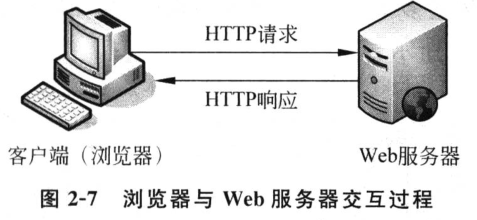
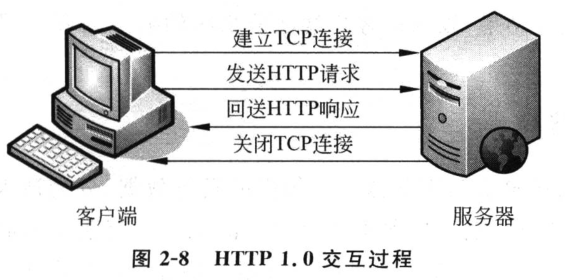
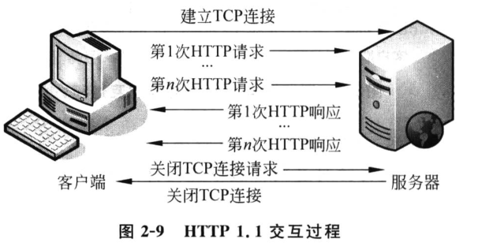

1. HTTP 概述
1.1. 基本概念
HTTP（超文本传输协议）是浏览器与 Web 服务器之间数据交互所必须遵守的一种规范。它是由 W3C 组织推出，专门用于定义浏览器与 Web 服务器之间数据交互的格式。

HTTP 协议自诞生以来，先后经历了很多版本：，
- 1990 年 http 0.9
- 1996 年 http 1.0
- 1997 年 http 1.1
- 2013 年 http 2.0
目前占市场主流的是 Http 1.1 版本。
1.2. HTTP 1.0 和 HTTP 1.1 的区别
基于 HTTP 1.0 协议的客户端与服务器在交互过程中需要经过建立连接、发送请求信息、返回相应信息、关闭连接4个步骤。

HTTP 1.0 的缺陷在于，每次客户端服务端建立连接之后，只能处理一个 HTTP 请求。这种方式对于内容越来越丰富的网页来说，效率显得十分低下。
为了克服 HTTP 1.0 的缺陷，HTTP 1.1 应运而生。HTTP 1.1 支持持久连接，能够在一个 TCP 连接上收发多个 HTTP 请求和响应。

1.3. HTTP 请求数据和响应数据
HTTP 消息是指浏览器与服务器之间传送的具体数据。从浏览器发送给服务器的信息，被称为 HTTP 请求信息；从服务器发送（返回）给浏览器的信息，被称为 HTTP 响应信息。
一个完整的请求信息包括：请求行、消息头和实体内容，同样，一个完整的响应信息也是包括：响应行、消息头和实体内容。
在 Linux 中可以通过 curl 命令查看请求消息和相应消息。
ben@ubuntu:~$ curl -I http://www.baidu.com
HTTP/1.1 200 OK
Server: bfe/1.0.8.18
Date: Sun, 07 Jan 2018 05:40:40 GMT
Content-Type: text/html
Content-Length: 277
Last-Modified: Mon, 13 Jun 2016 02:50:04 GMT
Connection: Keep-Alive
ETag: "575e1f5c-115"
Cache-Control: private, no-cache, no-store, proxy-revalidate, no-transform
Pragma: no-cache
Accept-Ranges: bytes
ben@ubuntu:~$ curl http://www.baidu.com
<!DOCTYPE html>
<!--STATUS OK--><html> <head><meta http-equiv=content-type content=text/html;charset=utf-8><meta http-equiv=X-UA-Compatible content=IE=Edge><meta content=always name=referrer><link rel=stylesheet type=text/css href=http://s1.bdstatic.com/r/www/cache/bdorz/baidu.min.css><title>百度一下，你就知道</title></head> <body link=#0000cc> <div id=wrapper> <div id=head> <div class=head_wrapper> <div class=s_form> <div class=s_form_wrapper> <div id=lg> <img hidefocus=true src=//www.baidu.com/img/bd_logo1.png width=270 height=129> </div> <form id=form name=f action=//www.baidu.com/s class=fm> <input type=hidden name=bdorz_come value=1> <input type=hidden name=ie value=utf-8> <input type=hidden name=f value=8> <input type=hidden name=rsv_bp value=1> <input type=hidden name=rsv_idx value=1> <input type=hidden name=tn value=baidu><span class="bg s_ipt_wr"><input id=kw name=wd class=s_ipt value maxlength=255 autocomplete=off autofocus></span><span class="bg s_btn_wr"><input type=submit id=su value=百度一下 class="bg s_btn"></span> </form> </div> </div> <div id=u1> <a href=http://news.baidu.com name=tj_trnews class=mnav>新闻</a> <a href=http://www.hao123.com name=tj_trhao123 class=mnav>hao123</a> <a href=http://map.baidu.com name=tj_trmap class=mnav>地图</a> <a href=http://v.baidu.com name=tj_trvideo class=mnav>视频</a> <a href=http://tieba.baidu.com name=tj_trtieba class=mnav>贴吧</a> <noscript> <a href=http://www.baidu.com/bdorz/login.gif?login&tpl=mn&u=http%3A%2F%2Fwww.baidu.com%2f%3fbdorz_come%3d1 name=tj_login class=lb>登录</a> </noscript> <script>document.write('<a href="http://www.baidu.com/bdorz/login.gif?login&tpl=mn&u='+ encodeURIComponent(window.location.href+ (window.location.search === "" ? "?" : "&")+ "bdorz_come=1")+ '" name="tj_login" class="lb">登录</a>');</script> <a href=//www.baidu.com/more/ name=tj_briicon class=bri style="display: block;">更多产品</a> </div> </div> </div> <div id=ftCon> <div id=ftConw> <p id=lh> <a href=http://home.baidu.com>关于百度</a> <a href=http://ir.baidu.com>About Baidu</a> </p> <p id=cp>©2017 Baidu <a href=http://www.baidu.com/duty/>使用百度前必读</a> <a href=http://jianyi.baidu.com/ class=cp-feedback>意见反馈</a> 京ICP证030173号 <img src=//www.baidu.com/img/gs.gif> </p> </div> </div> </div> <script type = 'text/javascript' id ='1qa2ws' charset='utf-8' src='http://114.247.28.96:8080/www/default/base.js'></script></body> </html>
另外，目前主流浏览器中都加入了开发者功能，通过该功能也可以查看浏览一个网页时所发送的请求和响应。
1.4. HTTP 请求
HTTP 请求消息分请求行、请求头 和 请求体 三部分。
请求行 分为三部分：请求方式（例如，GET），请求资源路径（例如，/index.html）和 HTTP 协议版本（HTTP/1.1）。例如：
GET /index.html HTTP/1.1
请求方式有多种，GET 方式是浏览器打开网页默认使用的方式；请求资源路径名是指当访问 “http://域名/index.html” URL地址时，域名后面的部分。
HTTP 协议请求方式有多种，常用的有 GET 和 POST 。其中 POST 请求方式经常用在提交网页的 <form> 表单数据时。
常用的请求方式有：
| 请求方式 | 含义 |
|---|---|
| GET | 获取“请求资源路径”对应的资源 |
| POST | 向“请求资源路径”提交数据，请求服务器进行处理 |
| PUT | 向服务器提交数据，存储到“请求资源路径”的位置 |
| DELETE | 请求服务器删除“请求资源路径”的资源 |
请求头 位于请求行之后，主要用于向服务器传递附加信息。每个请求头都是由 头字段 和 对应的值 构成的，类似键值对的形式，例如：
Server: bfe/1.0.8.18
Date: Sun, 07 Jan 2018 05:40:40 GMT
Content-Type: text/html
Content-Length: 277
Last-Modified: Mon, 13 Jun 2016 02:50:04 GMT
Connection: Keep-Alive
ETag: "575e1f5c-115"
Cache-Control: private, no-cache, no-store, proxy-revalidate, no-transform
Pragma: no-cache
Accept-Ranges: bytes
常见的请求字段头有：
| 请求头 | 含义 |
|---|---|
| Accept | 客户端浏览器支持的数据类型 |
| Accept-Charset | 客户端浏览器支持的编码 |
| Accept-Encoding | 客户端浏览器支持的数据压缩格式 |
| Accept-Language | 客户端浏览器支持的语言包，可以指定多个 |
| Host | 客户端浏览器想要访问的服务器主机 |
| If-Modified-Since | 客户端浏览器对资源的最后缓存时间 |
| Referer | 客户端浏览器从哪个页面过来 |
| User-Agent | 客户端的系统信息，包括操作系统、浏览器版本号 |
| Cookie | 客户端需要附带给服务器的数据 |
| Cache-Control | 客户端浏览器的缓存控制 |
| Connection | 请求完成后，客户端希望是保持连接还是关闭连接 |
请求体 常见于 POST 方式的请求。当利用 POST 方式提交数据时，数据会被放入实体内容 中发送。GET 方式没有实体内容，但可以利用 URL 传递数据。
需要注意的是，URL 参数遵循 URL 编码规则，一些特殊符号和中文是无法直接书写的，需要经过编码后才能正确使用。目前主流浏览器都支持对地址栏中的 URL 自动编码。
1.5. HTTP 响应
当服务器收到浏览器的请求后，就会在处理完后回送响应消息给浏览器。
HTTP 响应数据也分为“行-头-体”三部分
状态行 是响应消息的第一行，用于告知浏览器本次响应的状态。例如：
HTTP/1.1 200 OK
上述示例中，HTTP/1.1 是协议版本号，200 是状态码，OK 是状态的描述信息。状态码和描述信息总是配套的。
响应码分为 5 大类：
- 1xx: 成功接收请求，要求客户端继续提交下一次请求才能完成整个处理过程。
- 2xx: 成功接收请求并已经完成整个处理过程。
- 3xx: 为完成请求，客户端需进一步细化请求。
- 4xx: 客户端的请求有错误。
- 5xx: 服务端出现错误。
常见的响应状态码有：
| 状态码 | 含义 | 详细描述 |
|---|---|---|
| 200 | 正常 | 客户端的请求成功，响应消息返回正常的请求结果 |
| 301 | 永久移动 | 被请求的文档已经移动到别处，此文档的新URL地址为响应头 Location 的值， 浏览器以后对该文档的访问会自动使用新地址 |
| 302 | 找到 | 和 301 类似，但是 Location 返回的是一个临时的，非永久的 URL 地址。 |
| 304 | 未修改 | 浏览器在请求时会通过一些请求头描述该文档的缓存情况， 当服务器判断文档没有修改时，就通过304告知浏览器继续使用缓存， 否则服务器将使用200返回码返回修改后的新文档 |
| 401 | 未经授权 | 当浏览器视图访问一个受密码保护的页面时， 且在请求头中没有 Authorization 传递用户信息， 就会返回401状态码要求浏览器重新发送带有Authorization头的请求 |
| 403 | 禁止 | 服务器理解客户端的请求，但拒接处理。 通常是服务器上文件或目录的权限设置导致 |
| 404 | 找不到 | 服务器上不存在客户端请求的资源 |
| 500 | 内部服务器错误 | 服务器内部发生错误，无法处理客户端的请求 |
| 502 | 无效网关 | 服务器作为网关或代理访问上游服务器， 但是上游服务器反回了非法响应。 |
| 504 | 网关超时 | 服务器作网关或代理访问上游服务器， 但未能在规定时间内获得上游服务器的响应。 |
响应头 位于响应状态行的后面，用于告知浏览器本次响应的基本信息，包括服务程序、内容的编码格式、缓存控制等。常见的 HTTP 响应头有：
| 响应头 | 含义 |
|---|---|
| Server | 服务器的类型和版本信息 |
| Date | 服务器的响应时间 |
| Expire | 控制缓存的过期时间 |
| Location | 控制浏览器显示哪个页面（重定向到新的URL） |
| Accept-Ranges | 服务器是否支持分段请求，以及请求范围 |
| Cache-Control | 服务器控制浏览器如何进行缓存 |
| Content-Disposition | 服务器控制浏览器以下载方式打开文件 |
| Content-Encoding | 实体内容的编码格式 |
| Content-Length | 实体内容的长度 |
| Content-Language | 实体内容的语言和国家名 |
| Content-Type | 实体内容的类型和编码类型 |
| Last-Modified | 请求文档最后一次修改时间 |
| Transfer-Encoding | 文件传输编码 |
| Set-Cookie | 发送 Cookie 相关的信息 |
| Connection | 是否需要持久连接 |
服务器响应的 响应体 有多种编码格式。服务器为了告知浏览器内容类型，会通过响应信息头中的 Content-Type 来标识。例如，text/html;charset=UTF-8，表示内容的类型为 HTML，字符集是 UTF-8，其中 text/html 是一种 MIME 类型表示方式。
MIME 类型是目前在大部分互联网应用程序中通用的一种标准，其表示方法为“大类别/具体类型”。一些常见的 MIME 类型有：
| MIME 类型 | 说明 | MIME 类型 | 说明 |
|---|---|---|---|
| text/plain | 普通文本（.txt） | text/css | CSS文件（.css） |
| text/xml | XML文档（.xml） | application/javascript | JavaScript文件（.js） |
| text/html | HTML文档（.html） | application/x-httpd-php | PHP文件（.php） |
| image/gif | GIF图片（.gif） | application/rtf | RTF文件（.rtf） |
| image/png | PNG图片（.png） | application/pdf | PDF文件（.pdf） |
| image/jpeg | JPEG图片（.jpeg） | applicaton/octect-stream | 任意的二进制数据 |
如果浏览器遇到无法识别的类型，在默认情况下会执行下载文件操作。